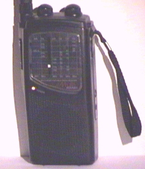
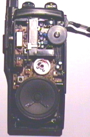
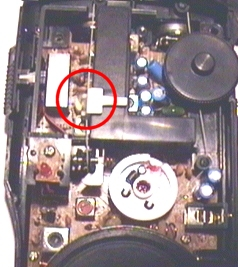
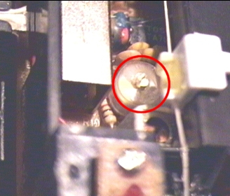
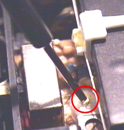

| Les téléphones sans fil |
C'est quoi ?
Cette rubrique
a été classée dans le phreaking mais elle ne concerne QUE l'écoute des téléphones
sans fil (pas les cellulaires !).
Les téléphones sans fil sont ces téléphones, vous savez, qui sont en deux
parties: une première est reliée à la ligne téléphonique filaire, c'est la
base, et l'autre, c'est le combiné. Vous devez sûrement en avoir un chez vous.
On pourrait s'imaginer que les liaisons entre la base et le combiné sont sécurisées,
mais en fait, à l'instar des cellulaires, celles-ci sont faites en clair,
la plupart du temps en analogique (les sans fil numériques gagnent du terrain,
mais les analogiques sont encore majoritaires). Ainsi, il suffit d'obtenir
un récepteur couvrant les fréquences utilisées par ces téléphones et c'est
bon: on écoute qui ont veut (dans un rayon plus ou moins restreint)
Technical data...
France Téléconne a agréé les sans fils pour qu'ils fonctionnent en FM (modulation de fréquence), sur des fréquences comprises entre 26,300 MHz et 26,500 MHz. Les connaisseurs seront surpris (enfin... surpris...) de se rendre compte que ce sont des fréquence toutes proches des bandes CB - prononcez cibi (les citizen band, vous savez, les radios que les routiers utilisent !). En effet, la bande CB va de 26,965 MHz à 27,405 MHz. Les cibistes reconnaîtront: avec un poste CB débridé, on écoute aisément les téléphones sans fil.
Les postes de
CB ne sont pas toujours très chers, mais il faut compter au moins 500 francs
pour un poste correct, en y rajoutant du bon câble coaxial (env. pour 100/200
francs), une antenne demi-onde à 200/300 francs et une alimentation 10/12
ampères pour un peu plus de 200 francs. On arrive facilement à 1000 balles
!
Si vous voulez vraiment avoir une excellente réception et vous lancer par
la même occasion dans la CB, n'hésitez pas à acheter tout ce matos ! Vous
ne regretterez sûrement pas (je vous l'assure !). Il suffit de demander au
vendeur s'il peut vous débrider la CB que vous voulez.
Mais si vous voulez vous contenter d'une réception correcte et portable, alors vous pourrez être satisfait pour 200 francs environ.
Une solution peu onéreuse et efficace
Le fournisseur de matériel électronique français CONRAD ELECTRONIC (et non pas conard electronic ;-]) vend pour 200 balles (+40 F de frais de port) un récepteur portable FM multibandes qui m'a très vite intéressé. En effet, ce récepteur étant analogique (et non pas numérique comme la plupart des CB), il est très facile à modifier. Après m'en être procuré un exemplaire, j'ai essayé de déplacer la réception des bandes CB plus bas, vers celle des sans fil. Et là, MIRACLE ! Une conversation téléphonique passait bien dans le haut parleur...
Voici la fiche technique du récepteur (catalogue CONRAD ELECTRONIC 2000):
Récepteur
multibandes Air Control M6
Air Control
M6 est un récepteur multibande pratique, facile à manipuler avec de nombreuses
possibilités de récpetion. Il est équipé d'un grand haut-parleur et d'un circuit
d'assourdissement réglable (Squelch). Il a également une échelle de mise au
point qui permet de régler très facilement les fréquences.
Caractéristiques techniques: fréquences: A 54 à 87 MHz; B 88 à 108
MHz; C 108 à 176 MHZ; D 26,965 à 27,405 MHz. Puissance 280 mW. Alimentation
6 volts par 4 piles R6 non fournies. Antenne téléscopique. Livré avec lanière
et notice. Dimensions: 100x210x50 mm. Poids 440 g.
Réf.:0205 362-14
Prix: 199.00 F
Adresse
du fournisseur:
CONRAD ELECTRONIC
VEPEX 5000
59861 LILLE CEDEX 9
Tél.: 03 20 12 88 88
Internet: www.conrad.fr
L'alignement de la fréquence
Vous avez reçu votre beau colis avec le récepteur à l'intérieur ? Il marche bien ? Bon... Mais je vais vous dire comment faire pour décupler ses capacités...
Comme je vous l'ai déjà dit, le fait que le récepteur soit analogique permet un réglage très facile. Il suffit généralement de tourner la bobine de selfs variables (composants électroniques utilisés dans les circuits radio) ou de CV (condensateurs variables, autres composants électroniques utilisés dans tous les circuits) pour modifier l'alignement d'un appareil.
Dans le cas présent, il s'agit d'un CV:
  
Munissez-vous d'un tournevis cruciforme de taille moyenne et d'un mini-tournevis isolé à 100 % (donc à 0 % métallique). Si le mini-tournevis n'est pas isolé, trouvez autre chose qui pourrait le remplacer. Sinon, utilisez un tournevis métallique mais vous aurez un peu plus de mal à trouver le réglage parfait.
Vous devez tourner le condensateur jusqu'à entendre des conversations.
Surtout, ayez de la PATIENCE !! Le réglage n'est pas toujours aisé et il n'y a pas forcément des conversations 24H/24.
Il vous est de tout façon possible de tourner le CV ultérieurement.
Vérifiez que la réception se produit entre les canaux de 1 à 50 sur l'afficheur, dans la zone "CB". Il vaut mieux recevoir vers le bas que vers le haut.
C'est tout ? Et après ?
C'est fini !
Vous devez sûrement vous réjouir de pouvoir entendre les conversations des
gens... Mais c'est du voyeurisme ! Je vous rappelle que c'est interdit par
la loi (art. 226-3 du Code Pénal à propos de l'atteinte à la vie privée et
aux communications).
En fait, utilisez ça plutôt pour faire du social engineering... Vous vous
amuserez sûrement plus !
Encore une fois, merci aux autorités (DGPT et FT) d'avoir agréé des fréquences pareilles...
J'ai ENTIEREMENT réalisé cette technique sans l'aide de qui que ce soit. Ce n'est absolument pas du pompage donc si vous désirez pomper, indiquez au moins votre source !!!
PA